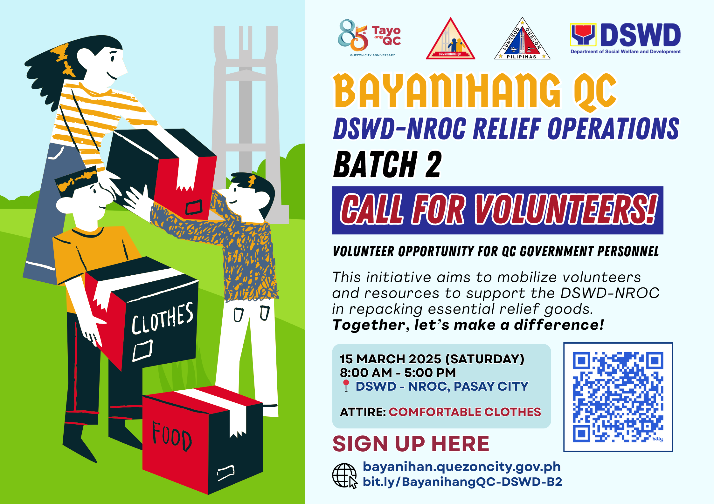
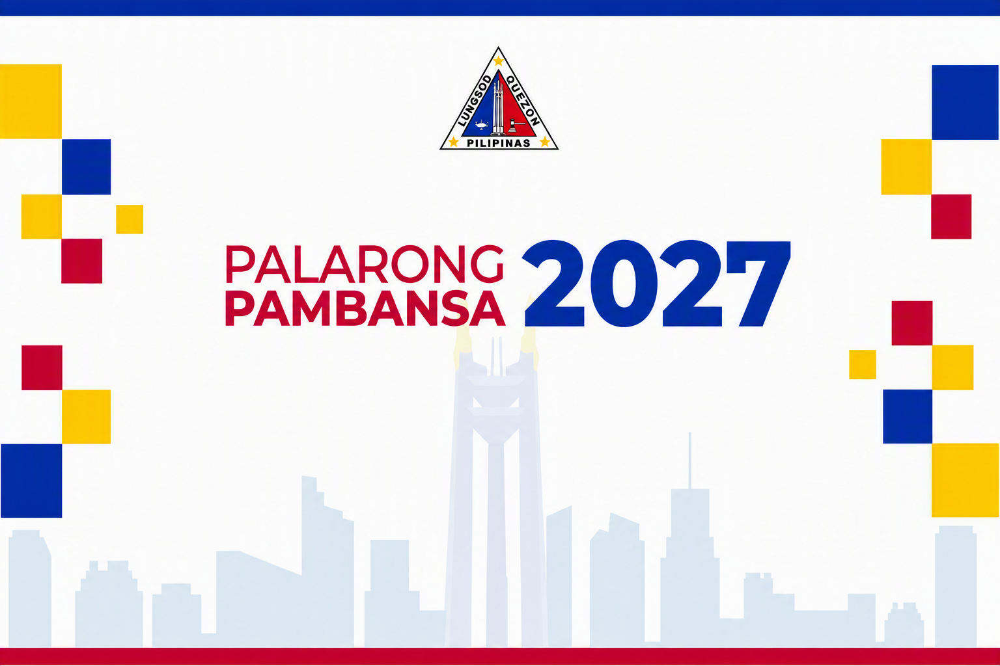
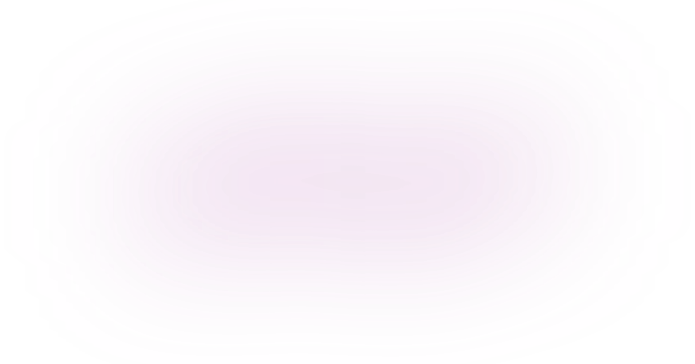
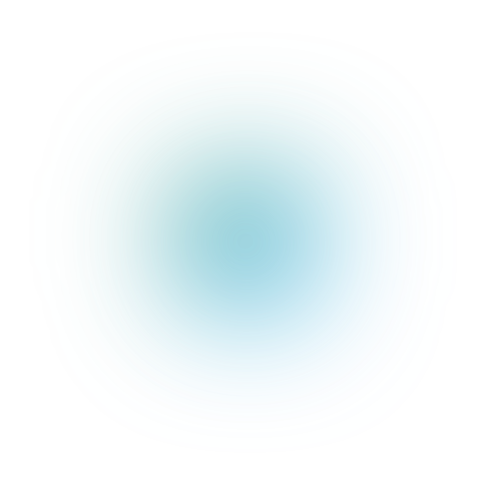
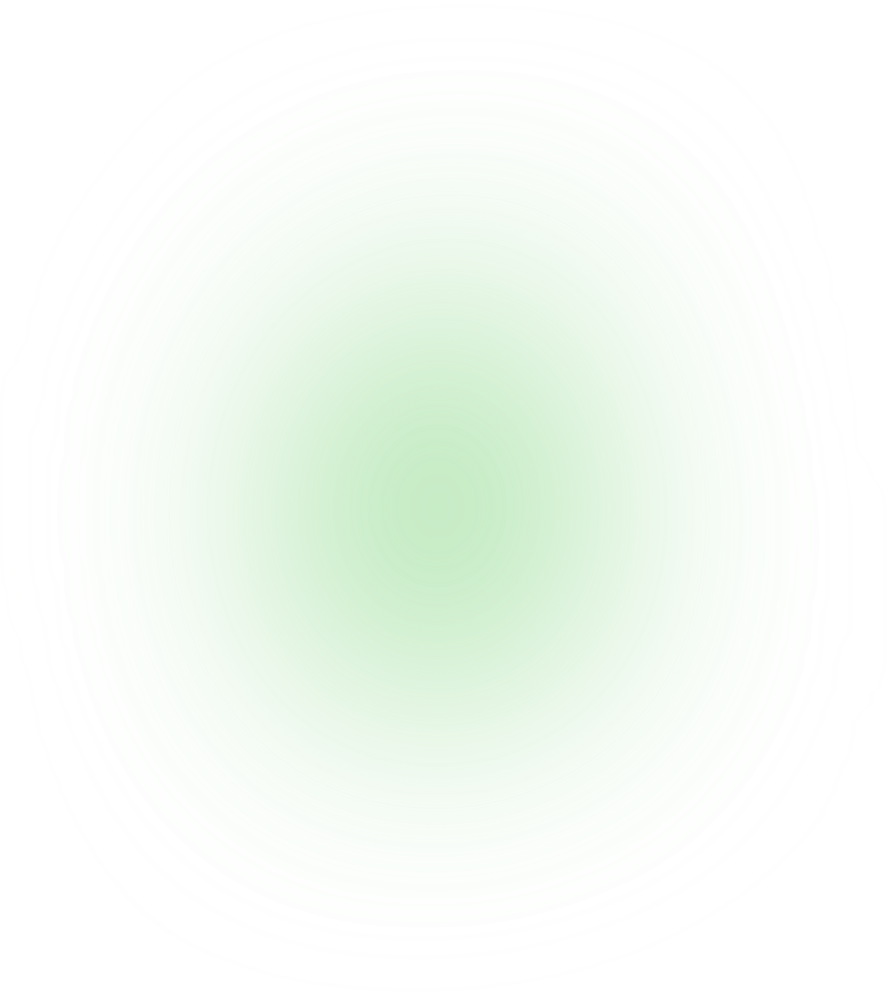
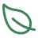
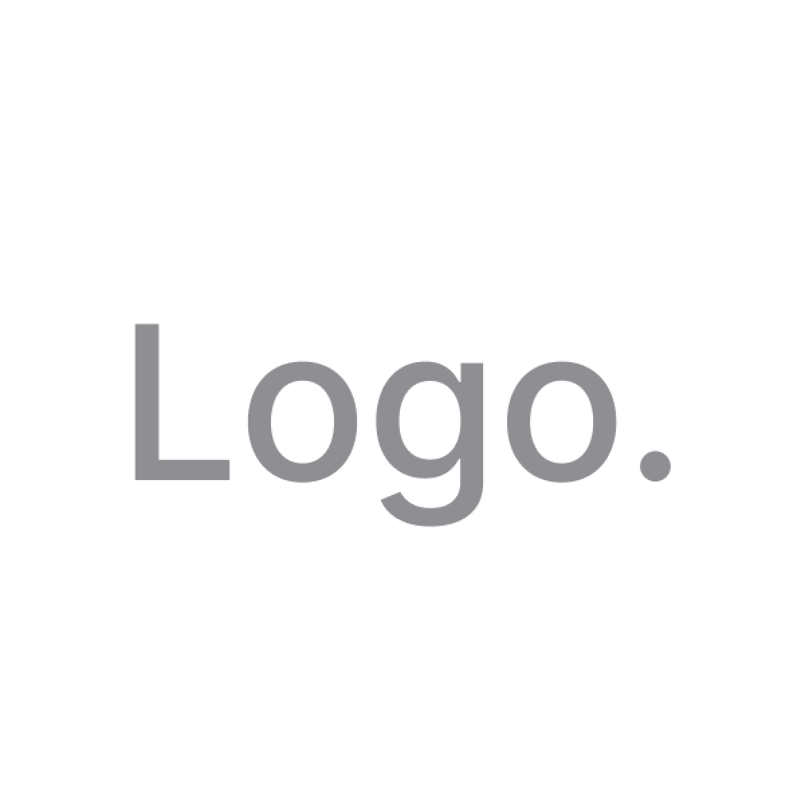

Upcoming
KyuSpecial Events
Bayanihang QC DSWD-NROC Relief Operations Batch 2



Welcome to Bayanihang QC
Be part of our growing network of volunteers! Join fellow QC citizens in creating positive change through volunteer opportunities that support communities, public service, education, sports, and environmental initiatives.

Upcoming volunteer opportunities

Upcoming
Bayanihang QC DSWD-NROC Relief Operations Batch 2
Upcoming
Community clean-up and neighborhood care
Upcoming
Share your time and skills with young learners
Upcoming
Help bring sports and play to the community

How to volunteer?
Whether you're volunteering for the first time or looking for new opportunities, Bayanihang QC makes it easy to get started and stay engaged.
Create an account and complete your volunteer profile.
Browse volunteer activities that match your interests and skills.
Choose an activity and register for an opportunity that inspires you.

Show up, lend a hand, and make a difference in your community.
Bayanihang QC · Stories of service
Volunteering is more than giving your time. It's an opportunity to build new skills, connect with like-minded individuals, gain valuable experiences, and create positive impact in communities across Quezon City.
Find your way to make an impactMany hands. One stronger community.
Bayanihang QC collaborates with these institutions and community organizations to deliver meaningful volunteer opportunities and create lasting positive change for QCitizens.
